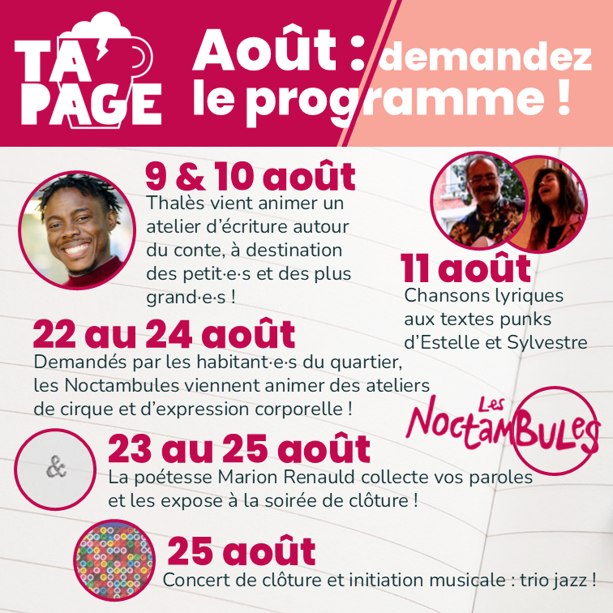
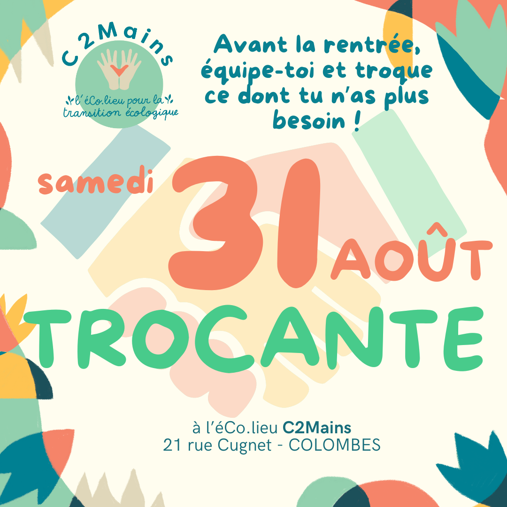

Bonjour à tou·te·s, bienvenue aux nouvelles et aux nouveaux, bienvenue sur la newsletter de PAPET&CO !
C'est l'été ! Comme l'an dernier, PAPET&CO a installé son café-librairie au centre social et culturel des Acacias pour TAPAGE, et sorti ses ateliers de fabrication, de Nanterre à Colombes, d'Ecozone au festival de la Récup' ! L'actualité est chargée, alors pas de temps à perdre... Bonnne lecture.
Vendredi 29 mars dernier, PAPET&CO a organisé son premier ciné-débat aux Lumières, le cinéma du centre-ville de Nanterre.
Le visionnage du film "L'Usine, le Bon, la Brute et le Truand" a été l'occasion de découvrir la lutte pour la préservation de la papeterie normande de la Chapelle Darblay et d'échanger avec la réalisatrice Marianne Lère-Laffitte.
Retrouvez le comparatif historique que nous avons établi entre cette papeterie de la Chapelle Darblay et les papeteries nanterriennes de la Seine, mettant en lumière la proximité de leurs trajectoires dans un contexte social, économique et écologique commun.
Accéder à la publication
NOS ACTIONS | PAPET' AU PRINTEMPS
PAPET&CO n’a pas chômé ce printemps, nous avons eu la chance d’être invité à participer à beaucoup d’événements organisés à Nanterre et ailleurs, au rythme de deux par mois !
Les Rues aux Enfants de la rue Langevin (5 avril et 28 juin) et celle du quartier du Chemin de l’Île (3 mai) ont été l’occasion de renouveler notre opération Roule Papet de 2022 : grande distribution de livres à l’aide du vélo-cargo de l’association Nanterre en Transition !
Nos ateliers de fabrication se sont installés à la soirée Nomade du 18 avril et au Festival de la Récup’ du Jardin d’Eole (Paris 19e) le 2 juin. Au programme : fabrication de fleurs et de guirlandes à partir de papier réutilisé !
Enfin, une nouvelle animation ! Le 17 mai sur la place du marché du centre de Nanterre et le 18 juillet à la deuxième soirée Nomade du quartier du Chemin de l’Île, nous avons testé notre prototype de jeu de société, et recueilli beaucoup d’idées d’améliorations, merci pour vos retours ! Nous vous en dirons plus sur ce jeu très prochainement...
INFOGRAPHIE | QUE D'EAU, QUE D'EAU !
Connaissez-vous l’empreinte en eau des objets du quotidien ?
Savez-vous distinguer les 3 couleurs que peut prendre l’eau en fonction de sa provenance et de son usage ?
Venez le découvrir sur ces infographies !
Affiches réalisées pour le festival Ecozone de l’écologie au quotidien du 27 avril, au parc des Bords de Seine à Nanterre
Accéder à la publication
TAPAGE, vous connaissez bien, on vous en parle chaque année !
Pensé pour être le prototype du tiers-lieu que nous voulons ouvrir à Nanterre dans le quartier du Chemin de l'île, c'est tout à la la fois une librairie d'occasion, un café associatif et un espace où se côtoient ateliers de fabrication, animations et interventions d'artistes et d'acteurs de la culture et de l'économie sociale et solidaire.
Il est installé depuis le 5 juillet dans une salle mise à notre disposition par le centre social et culturel Les Acacias (1 rue des Sorbiers à Nanterre), du jeudi au dimanche, de 16h à 20h, et jusqu'à la soirée de clôture le dimanche 25 août (à noter que TAPAGE sera fermé la semaine du 15 août).
Au programme du mois de juillet :
- un café des bricoleurs animé par Nanterre en Transition pour réparer objets cassés et autre petit électroménager en panne. C'était aussi l'occasion de réparer les jardinières du petit potager du centre social !
🔗Nanterre en Transition
- le rendez-vous hebdomadaire de Cathy : l'atelier tricot tous les dimanches a fait des émules cette année encore !
Anne est également venue proposer un atelier de réparation de vêtements, et sera de retour le dimanche 11 août !
🔗L'instagram de Cathy
🔗Entre Terre et Fil
- le retour de Malika et de son qalam pour un super atelier de calligraphie !
🔗L'instagram de Malika
- trois ateliers d'initiation au théâtre d'improvisation avec Ulysse du Théâtre du bout du monde. Ecriture d'une pièce de théâtre sur le thème du harcèlement à l'école, jeux autour de la confiance, les enfants (et les plus grand·es) étaient ravi·es !
🔗Le Théâtre du Bout du Monde
Nous tenons à remercier tou.tes nos intervenant·es ainsi que nos partenaires des Acacias, de la Ville de Nanterre et de l'association Nanterre en Transition ! On vous dit à très vite à TAPAGE !

Cette action est soutenue par la Ville de Nanterre dans le cadre de la bourse de la transition écologique et du contrat ville "Quartiers 2030".

Nous sommes à la recherche de personnes pour aider dans des petites actions locales ou des actions de fond, par exemple :
- aider au tri des livres d’occasion,
- participer à la création du projet de tiers-lieu,
- contribuer à la préparation d'ateliers de fabrication,
- participer à la communication de l'association en prenant des photos par exemple,
- participer à des permanences et des animations,
- fabriquer et tester des animations pour les événements.
Nous faisons une liste de contacts à qui envoyer des mails en cas de besoin ponctuels, pour que les membres de l'association soient accompagné.e.s dans leurs actions.
Si vous souhaitez recevoir ces sollicitations, n'hésitez pas à nous écrire :
Vous pouvez aussi continuer à nous soutenir, voire nous rejoindre, en suivant ces deux liens :
Soutenir
Adhérer

31/08 TROCANTE DE C2MAINS
Après nos animations du coin lecture de l'éco-lieu C2Mains (21 rue Cugnet, Colombes) une partie de cet été, rendez-vous le 31 août pour la trocante !
Si vous nous avez loupés et que vous ne pouvez pas venir le 31, les derniers ateliers de la saison auront lieu les 8, 15 et 22 septembre !
En savoir plus

NEWSLETTERS
Vous pouvez retrouver les précédentes newsletters de 2022 à 2024 sur le site, en suivant ce lien ! Vous trouverez notamment dedans quelques articles sur le papier rédigés par nos adhérents, et des rétrospectives de nos actions précédentes.
En savoir plus

BOÎTE À IDÉES
Vous avez une suggestion, une remarque, un projet dont vous souhaitez nous faire part ? N'hésitez pas à utiliser notre boîte à idées ! C'est pour nous un moyen de lancer des projets, nous en faisons la lecture chaque mois lors d'un rendez-vous convivial.
En savoir plus
Si vous êtes dans cette liste de diffusion, c'est que vous avez probablement croisé un·e de nos membres
et que vous avez accepté de recevoir de nos nouvelles. Vous pouvez revenir sur votre décision en nous envoyant un mail,
ou au contraire nous proposer d'ajouter quelqu'un (avec son consentement) !